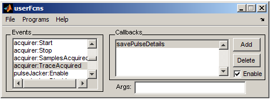
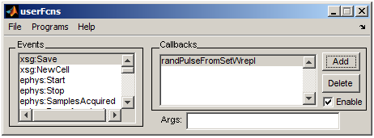
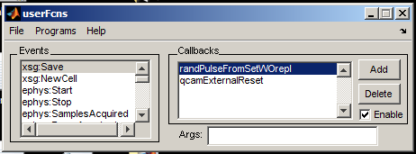
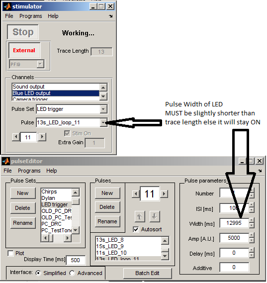
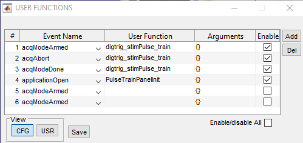
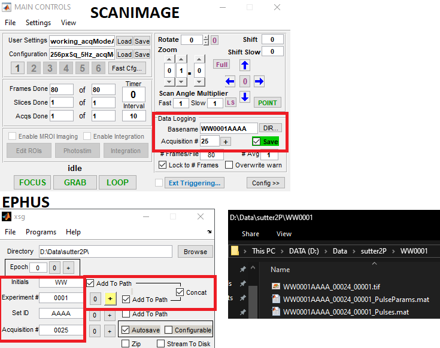

Configuration
Ephus and ScanImage settings. Both rigs run the same versions and the same custom user functions; the values that differ are listed in Per-rig differences.
Per-rig differences
Each rig has its own Ephus startup file and ScanImage machine data file. Summary:
| Setting | Sutter | Scientifica |
|---|---|---|
| Ephus startup file | ...20250903.m | ...20260728_scientifica.m |
| ScanImage machine data file | Machine_Data_File.m | Machine_Data_File_scientifica.m |
xsgStartDirectory |
'D:\Data\sutter2P\' |
'C:\rig\DATA_TEMP' |
motors(1).controllerType |
'sutter.mpc200' |
'scientifica' |
motors(1).comPort |
3 — Sutter MPC200 |
4 — SliceScope XYZ stage |
AI17 / Green LED output check |
In use | Not connected |
qcam.m variant |
Retiga 2000R, 1600 × 1200 | Rolera-XR, 696 × 520 |
Full per-file breakdowns: Ephus startup file · ScanImage machine data file
COM3hazard on the Scientifica rig.COM3there is the beam attenuator, not the stage. Ifmotors(1).comPortis left at the inherited value of3, ScanImage opens the attenuator and drives it as an XYZ stage. See Scientifica rig-specific drivers.
Analog output assignments (AO0 green LED, AO1 sound + AI16 loopback, AO2 blue LED,
AO3 QCam trigger) and the ScanImage → Ephus trigger topology are the same on both rigs.
Terminal-by-terminal wiring for the Scientifica rig: DAQ wiring.
Ephus
Startup file
One startup file per rig:
| Rig | Startup file |
|---|---|
| Sutter | ephus_init_matlab2013b_32bit_250kHz_Camera_20250903.m |
| Scientifica | ephus_init_matlab2013b_32bit_250kHz_Camera_20260728_scientifica.m |
Only two values differ between them:
| Setting | Sutter | Scientifica |
|---|---|---|
xsgStartDirectory |
'D:\Data\sutter2P\' |
'C:\rig\DATA_TEMP' |
acqChannelNames{2} (AI17) |
'Green LED output check' |
'unused (AI17)' — not connected |
Channel counts and IDs are otherwise identical, including acqChannelIDs = [16 17] — the
Scientifica rig still declares AI17, it is simply named as unused because nothing is wired to
it. All stimulator channels, the sample rate, and the trigger and sample-clock routing match.
Key configuration values (Sutter file shown; the Scientifica file differs only as above):
xsgStartDirectory = 'D:\Data\sutter2P\';
%Acquirer channels (Analog Input)
acqChannelNames = {'sound output check', 'Green LED output check'}; % Cell array of descriptive names for analog input acquisition channels to configure, e.g. {'Lick Sensor' 'Nose Poke Sensor'},
acqBoardIDs = [2 2]; % A single number (e.g. 1 for 'Dev1') specifying DAQmx board for /all/ named acquisition channels; or, an array of numbers of length equal to 'acqChannelNames' (e.g. [1 1 1 2 2] indicating 'Dev1' for first 3 channels, 'Dev2' for last 2 channels) identifying DAQmx board on which each of the named acquisition channels appears.
acqChannelIDs = [16 17]; % Array of numbers, of length equal to 'acqChannelNames', identifying DAQmx channel number (e.g. 1 for AI1) for each of the named acquisition channels (e.g. [0 1 2 0 1] indicating AI0-2 for first 3 channels and AI0-1 for last 2 channels, for case of multiple boards).
%Stimulator channels (Analog Output)
stimChannelNames = {'Sound output', 'Blue LED output', 'Camera trigger', 'Green LED output'}; % Cell array of descriptive names for analog output stimulus channels to configure, e.g. {'Whisker Stimulator' 'Position Encoder'},
stimBoardIDs = [2 2 2 2]; % A single number (e.g. 1 for 'Dev1') specifying DAQmx board for /all/ named analog stimulus channels; or, an array of numbers of length equal to 'stimChannelNames' (e.g. [1 1 1 2 2] indicating 'Dev1' for first 3 channels, 'Dev2' for last 2 channels) identifying DAQmx board on which each of the named analog stimulus channels appears.
stimChannelIDs = [1 2 3 0]; % Array of numbers, of length equal to 'stimChannelNames', identifying DAQmx channel number (e.g. 1 for AI1) for each of the named analog stimulus channels (e.g. [0 1 2 0 1] indicating AI0-2 for first 3 channels and AI0-1 for last 2 channels, for case of multiple boards).
initialSampleRate = 250000; %(REQUIRED) Initial rate, in Hz, to use for all analog and digital input/output channels configured for use in Ephus
triggerOrigin = '/dev2/port0/line2'; %(REQUIRED) Full DAQmx specification of single digital line on /one/ board (e.g. '/dev1/port0/line0') used as the Ephus default trigger pulse to synchronize the one or more boards.
triggerDestinations = {'PFI9','PFI0'}; %PFIO is external trigger-CTA %(REQUIRED) Cell array of one or more DAQmx PFI terminal names configured as the choice of PFI terminals on which Ephus must receive a trigger input signal, on /all/ of the DAQmx boards configured for use by Ephus.
sampleClockOrigin = '/dev2/ctr0'; %this is ctr0 is PFI12, ctr1 is PFI13 CTA % Full DAQmx specification of single counter output channel on /one/ board (e.g. '/dev1/ctr0') on which the sample clock generated by Ephus appears. Ephus employs the default DAQmx routing of counter output channels to PFI output terminals (PFI12 for CTR0, PFI13 for CTR1; refer to DAQmx documentation for further information), Full DAQmx specification of counter output channel on /one/ board (e.g. '/dev1/ctr0') on which the sample clock is generated.
sampleClockDestination = 'PFI10'; % A DAQmx PFI terminal name (e.g. 'PFI1') on which sample clock is input on /all/ of the boards used by Ephus
- Internal
triggerOriginP0.2goes toPFI9–PFI9is for triggering internal to Ephus PFI0of Dev2/USB-6229 (BNC port) is connected to Dev1/PCI-6110 USER2 BNC port.- Dev1/USER2 is connected to Dev1/PFI13
Initial configuration state
*.settingsfor each Ephus window at startup: config/Ephus/init_config- Chosen at Ephus start
- Located in
C:/Rig/Ephus 2013b/startup/config/init_config
Custom user functions
- Located in
C:/Rig/Ephus 2013b/custom_user_fcns

- savePulseDetails.m: Save stimulus pulse details to .mat file. This will save the pulse details and traceAcquired time in a mat file using the same path and naming convention as the xsg settings. If Ephus trigger set to external (PFI0 / ScanImage), save path corresponds to most recent .tif, otherwise if trigger set to internal (PFI9), filename corresponds to XSG settings.

- randPulseFromSetWOrepl.m: update selected pulse to random in list (without replacement)
- randPulseFromSetWrepl.m: update selected pulse to random in list (with replacement)


- qcamExternalReset.m: Resets QCam to External automatically to enable loops. Otherwise would need to manually click External off and on.
- See: Ephus looping
- testusrfcn.m: for testing user functions
QCam (widefield camera)
qcam.m hardcodes the camera resolution, so each rig needs the variant matching its camera.
On the rig the file is deployed as:
C:/Rig/Ephus 2013b/Programs/qcam/qcam.m
i.e. Ephus 2013b → Programs → qcam → qcam.m. The copies here carry
descriptive names to keep them apart — rename the rig's variant to qcam.m when deploying.
| Rig | Camera | Variant |
|---|---|---|
| Sutter | Retiga 2000R (1600 × 1200) | qcam_mod_retiga_w1600_h1200.m |
| Scientifica | Rolera-XR (696 × 520) | qcam_raw_rolera_w696_h520.m |
- Camera trigger pulse, QCam control panel settings (exposure and bin factor differ per rig), and the resolution edits are documented in: Widefield Epifluorescence
ScanImage
Machine Data File (startup)
One machine data file per rig. Both deploy as Machine_Data_File.m on their own rig; the
copies here are named to keep them apart.
| Rig | Machine data file |
|---|---|
| Sutter | Machine_Data_File.m |
| Scientifica | Machine_Data_File_scientifica.m |
The differences are confined to the motor/stage block:
| Setting | Sutter | Scientifica |
|---|---|---|
motors(1).controllerType |
'sutter.mpc200' |
'scientifica' |
motors(1).comPort |
3 |
4 |
motors(1).customArgs |
{} |
{'stageType','slice_scope'} |
motors(1).moveCompleteDelay |
5 |
0 |
motors(1).moveTimeout |
[] (controller default) |
5 s |
Do not carry
motors(1).comPort = 3over to the Scientifica rig.COM3there is the beam attenuator, not the stage — ScanImage would open the attenuator and drive it as an XYZ stage.
Everything else matches on both rigs: shutter on Dev1 port0/line7, galvos on Dev1 AO0/AO1,
PMT channel IDs, 30° angular ranges, 0.333 V per optical degree, and 7.5° park angles.
Beam modulation is unconfigured on both rigs — beamDaqDevices = {} and
beamDaqs(1).chanIDs = []. Laser power is set outside ScanImage; see
2P Laser Power control.
The Scientifica file also has components = {}.
Key configuration values (Sutter file shown; the Scientifica file differs only as above):
shutterDaqDevices = {'Dev1'}; % Cell array specifying the DAQ device or RIO devices for each shutter eg {'PXI1Slot3' 'PXI1Slot4'}
shutterChannelIDs = {'port0/line7'}; % Cell array specifying the corresponding channel on the device for each shutter eg {'PFI12'}
motors(1).controllerType = 'sutter.mpc200'; % If supplied, one of {'sutter.mp285', 'sutter.mpc200', 'thorlabs.mcm3000', 'thorlabs.mcm5000', 'scientifica', 'pi.e665', 'pi.e816', 'npoint.lc40x'}.
motors(1).dimensions = 'XYZ'; % Assignment of stage dimensions to SI dimensions. Can be any combination of X,Y,Z, and R.
motors(1).comPort = 3; % Integer identifying COM port for controller, if using serial communication
motors(1).customArgs = {}; % Additional arguments to stage controller. Some controller require a valid stageType be specified
motors(1).invertDim = '+++'; % string with one character for each dimension specifying if the dimension should be inverted. '+' for normal, '-' for inverted
motors(1).moveCompleteDelay = 5; % Delay from when stage controller reports move is complete until move is actually considered complete. Allows settling time for motor
%% LinScan (LinScanner)
deviceNameAcq = 'Dev1'; % string identifying NI DAQ board for PMT channels input
deviceNameGalvo = 'Dev1'; % string identifying NI DAQ board for controlling X/Y galvo. leave empty if same as deviceNameAcq
shutterIDs = 1; % Array of the shutter IDs that must be opened for linear scan system to operate
%Acquisition
channelIDs = [0 1 2 3]; % Array of numeric channel IDs for PMT inputs. Leave empty for default channels (AI0...AIN-1)
%Scanner control
XMirrorChannelID = 0; % The numeric ID of the Analog Output channel to be used to control the X Galvo.
YMirrorChannelID = 1; % The numeric ID of the Analog Output channel to be used to control the y Galvo.
xGalvoAngularRange = 30; % max range in optical degrees (pk-pk) for x galvo
yGalvoAngularRange = 30; % max range in optical degrees (pk-pk) for y galvo
voltsPerOpticalDegreeX = 0.333; % galvo conversion factor from optical degrees to volts (negative values invert scan direction)
voltsPerOpticalDegreeY = 0.333; % galvo conversion factor from optical degrees to volts (negative values invert scan direction)
scanParkAngleX = 7.5; % Numeric [deg]: Optical degrees from center position for X galvo to park at when scanning is inactive
scanParkAngleY = 7.5; % Numeric [deg]: Optical degrees from center position for Y galvo to park at when scanning is inactive
%Optional: mirror position offset outputs for motion correction
deviceNameOffset = ''; % string identifying NI DAQ board that hosts the offset analog outputs
XMirrorOffsetChannelID = 0; % numeric ID of the Analog Output channel to be used to control the X Galvo offset.
YMirrorOffsetChannelID = 1; % numeric ID of the Analog Output channel to be used to control the y Galvo offset.
XMirrorOffsetMaxVoltage = 1; % maximum allowed voltage output for the channel specified in XMirrorOffsetChannelID
YMirrorOffsetMaxVoltage = 1; % maximum allowed voltage output for the channel specified in YMirrorOffsetChannelID
internalRefClockSrc = '';
User settings and configuration files
Each .usr (user settings) file pairs with a .cfg (configuration) file. Both rigs acquire at
5 Hz at 256 × 256 by default — the Sutter rig at 1x zoom, the Scientifica rig at 1.5x,
because its galvos cannot sustain a 256 × 256 frame at 1x without a comb artifact.
Why the zoom differs, and what to do if the artifact appears: Appendix — Galvo scan settings.
Naming: _1-5 / _2 are the zoom factor, merge means both channels with merge view,
256pxSq_5Hz is 256 × 256 at 5 Hz, and 256x128_10Hz halves the lines per frame for 10 Hz.
Sutter rig
Zoom 1x throughout — there is no galvo limit at 1x for a 256 × 256 frame at 5 Hz.
| Configuration | Zoom | Frame | Channels | User settings |
|---|---|---|---|---|
| 256pxSq_5Hz_acqModeArmed.cfg — default | 1x | 256 × 256, 5 Hz | single | working_acqModeArmed.usr |
| 256pxSq_5Hz_merge_acqModeArmed.cfg | 1x | 256 × 256, 5 Hz | both, merge view | working_merge_acqModeArmed.usr |
| 256x128_10Hz_acqModeArmed.cfg | 1x | 256 × 128, 10 Hz | single | working_256x128_10Hz_acqModeArmed.usr |
| 256x128_10Hz_merge_acqModeArmed.cfg | 1x | 256 × 128, 10 Hz | both, merge view | working_256x128_10Hz_merge_acqModeArmed.usr |
Scientifica rig
Zoom 1.5x is the default — it maximises recording area while avoiding the comb artifact from the galvo limits. 2x is the conservative fallback if the artifact returns.
| Configuration | Zoom | Frame | Channels | User settings |
|---|---|---|---|---|
| 256pxSq_5Hz_acqModeArmed_1-5.cfg — default | 1.5x | 256 × 256, 5 Hz | single (channel 2, GFP) | working_acqModeArmed_1-5.usr |
| 256pxSq_5Hz_acqModeArmed_2.cfg | 2x | 256 × 256, 5 Hz | single (channel 2, GFP) | working_acqModeArmed_2.usr |
| 256pxSq_5Hz_merge_acqModeArmed_1-5.cfg — default for both channels | 1.5x | 256 × 256, 5 Hz | both, merge view | working_merge_acqModeArmed_1-5.usr |
| 256pxSq_5Hz_merge_acqModeArmed_2.cfg | 2x | 256 × 256, 5 Hz | both, merge view | working_merge_acqModeArmed_2.usr |
| 256x128_10Hz_acqModeArmed_1-5.cfg | 1.5x | 256 × 128, 10 Hz | single | working_256x128_10Hz_acqModeArmed_1-5.usr |
| 256x128_10Hz_acqModeArmed_2.cfg | 2x | 256 × 128, 10 Hz | single | working_256x128_10Hz_acqModeArmed_2.usr |
| 256x128_10Hz_merge_acqModeArmed_1-5.cfg | 1.5x | 256 × 128, 10 Hz | both, merge view | working_256x128_10Hz_merge_acqModeArmed_1-5.usr |
| 256x128_10Hz_merge_acqModeArmed_2.cfg | 2x | 256 × 128, 10 Hz | both, merge view | working_256x128_10Hz_merge_acqModeArmed_2.usr |
The 10 Hz configurations halve lines per frame to 128, keeping 256 pixels per line. This doubles the frame rate without shortening the line period, so it costs no galvo margin — the field is full width but half height, and pixels are not square. Used for spontaneous cell recordings.
Pulse Train Config
- PulseTrainPanelInit.m: ran at startup - initiates pulse train UI fig
- pcPulseTrainTriggerPanel.fig: UI .fig file
- pcPulseTrainTriggerPanel.m: Pulse train script
User function

- digtrig_stimPulse_train.m: Triggers Ephus stimulus pulse with configurable delay
- digtrig_stimPulse_train_withCam.m: Version with pupillometry camera support
- scim5eventTest.m: For testing user functions
How the user functions work:
The digtrig_stimPulse_train function responds to three ScanImage events. The event name is passed as input to the function and handled via switch/case:
-
acqModeArmedevent - Triggered when acquisition starts- Creates an NI-DAQ counter output task with configurable delay and pulse width
- After the delay, initiates a +5V pulse on counter 1 (ctr1) corresponding to PFI13
- Signal path:
PFI13→USER2→ BNC cable → NI USB-6229PFI0 - Ephus stimulator and acquirer are configured to trigger on PFI0 (Dev2/USB-6229)
- The
stimDelayandstimWidthparameters are saved to a .mat file matching the .tif filename
-
acqModeDoneevent - Triggered when acquisition completes normally- Clears the NI-DAQ counter output task so it can be reused
-
acqAbortevent - Triggered when acquisition is prematurely stopped- Aborts and clears the NI-DAQ counter output task for safe reuse
Ephus + ScanImage
- File naming scheme for organized data files

Notes
Ctrcorresponds to counter output channelCtr0 = PFI12;Ctr1 = PFI13PFI13on Dev1/PCI-6110 goes toUser2which goes toPFI0on Dev2/USB-6229- Counter output channels 0/1/2/3 correspond to terminals PFI 12/13/14/15 on the BNC breakouts for NI multifunction boards